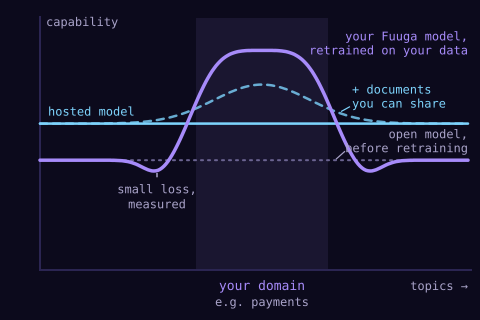

The idea

Your decisions, formats and code conventions, taught to an open model.
Searched in-house, including the ones that may never leave.
The gain and the small loss, on your own held-out tasks, before release.
Hietanen Consultancy · Fuuga · 03